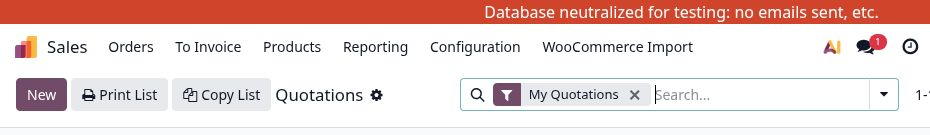
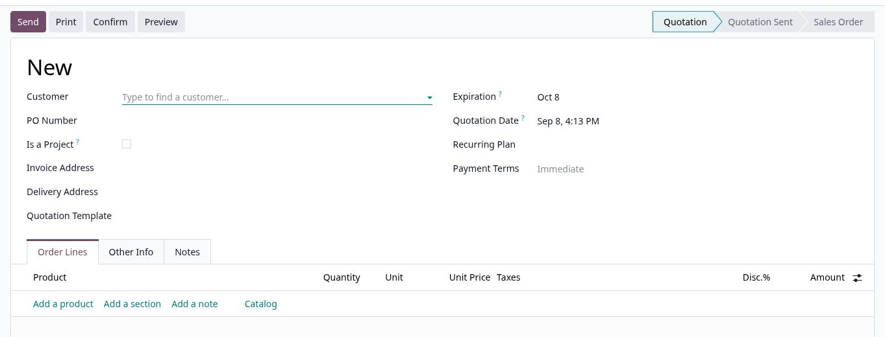
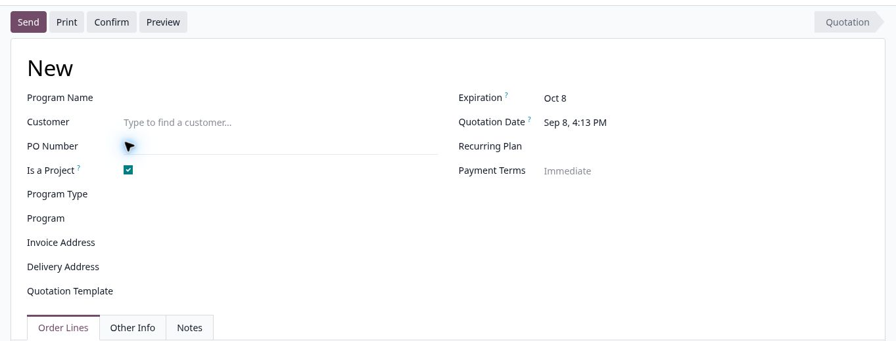
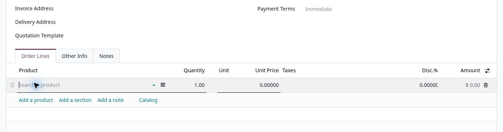

Decision point
Choose the quote type first
Ask one question: will this work be tracked as a Program project through quoting, warehouse operations, and the Program dashboard?
No — standard quotation
Leave Is a Project unchecked. Program Name, Program Type, and Program are not used.
Yes — project quotation
Check Is a Project, enter a Program Name, and link or create the correct Program.
Operational rule: A project quote needs both Is a Project checked and a Program Name. Without both, it will not be included on the Program dashboard. A Program Name on a non-project quote is ignored.
Preparation
Before you start
Have the following information ready:
- Customer and the correct invoice and delivery addresses.
- Customer PO number, when supplied.
- Products or services, quantities, selling prices, taxes, and any discount.
- Expiration date, payment terms, and quotation template, when applicable.
- For a project: the Program Name, Program Type, and whether an existing Program should be linked.
Environment: Practice or validate changes in the sandbox. Create customer-facing records in production only when the quote is ready for live processing.
Common start
Start a new quotation
- Open the Sales app.
- Go to Orders → Quotations.
- Select New.

Path A
Create a quotation without a project
- Select the Customer. Odoo fills the invoice and delivery addresses from the customer record; confirm both are correct.
- Enter the PO Number if the customer supplied one.
- Leave Is a Project unchecked. Do not enter or retain a Program Name, Program Type, or Program link.
- Review commercial settings: expiration, quotation date, payment terms, recurring plan, and quotation template.
- Continue to Add products or services.

Path B
Create a quotation with a project
- Select the Customer and verify the invoice and delivery addresses.
- Check Is a Project. Odoo displays Program Name, Program Type, and Program.
- Enter Program Name. Use the clear, customer-recognizable name that should appear on the Program dashboard and warehouse operation cards.
- Link the Program. If it already exists, select it in Program; Odoo fills its Program Type. For a new Program, select the correct Program Type, save the quotation, then use Create Program when the button appears.
- Complete the remaining quote fields, including PO Number, expiration, payment terms, addresses, and quotation template.
- Continue to Add products or services.

Existing Program shortcut: When the Program already exists in Program Builder, its Create Quote action is the preferred starting point. It links the quote automatically and uses the Program Type's default quotation template; return here to review the generated quotation before sending it.
Both paths
Add products or services
- On Order Lines, select Add a product or open Catalog.
- Select the product or service and enter the Quantity.
- Verify the Unit, Unit Price, Taxes, and Discount.
- Repeat for each line. Use Add a section to group the quote and Add a note for customer-facing explanations.
- Confirm the untaxed amount, taxes, and total at the bottom of the quotation.

Both paths
Review and finish
- Save the quotation. Confirm Odoo assigns a quotation number.
- Preview the customer document. Check customer name, addresses, PO number, line descriptions, quantities, pricing, taxes, terms, and totals.
- Send the quotation when it is ready for the customer. Review the recipient and attached quotation before sending.
- Confirm only after the customer accepts. Confirmation changes the quotation to a Sales Order and may start downstream purchasing, inventory, manufacturing, or delivery activity.
Do not confirm early: Confirmation is an operational handoff, not just a status label. Resolve pricing, addresses, terms, and Program linkage first.
Exceptions
Troubleshooting
| What you see | What it means | What to do |
|---|---|---|
| Is a Project is missing | Program features are not enabled for the quotation's company. | Check the correct company is selected. Ask an administrator to review Use Programs for that company. |
| Program fields are hidden | Is a Project is not checked, or Programs are disabled for the company. | Check Is a Project only when the quotation is truly a tracked project. |
| Project is absent from the Program dashboard | The quote is not marked as a project, Program Name is blank, the company is not enabled, or the quote is cancelled. | Correct the project flag and Program Name on the active quote, then refresh the dashboard. |
| Create Program is not visible | A Program is already linked, or Program Type has not been selected. | Choose an existing Program or select the correct Program Type first. |
Quality check
Final checklist
- Correct customer, invoice address, and delivery address
- PO number entered when supplied
- Project choice is correct; project quotes have a Program Name and Program link or creation plan
- Products, quantities, units, prices, taxes, discounts, and totals verified
- Expiration, payment terms, template, and customer-facing notes reviewed
- Preview checked before Send; acceptance received before Confirm